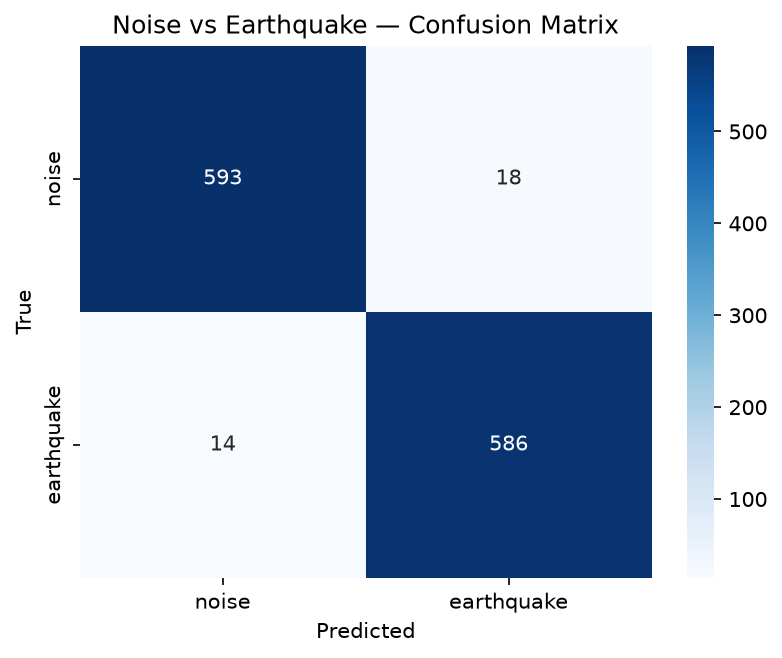
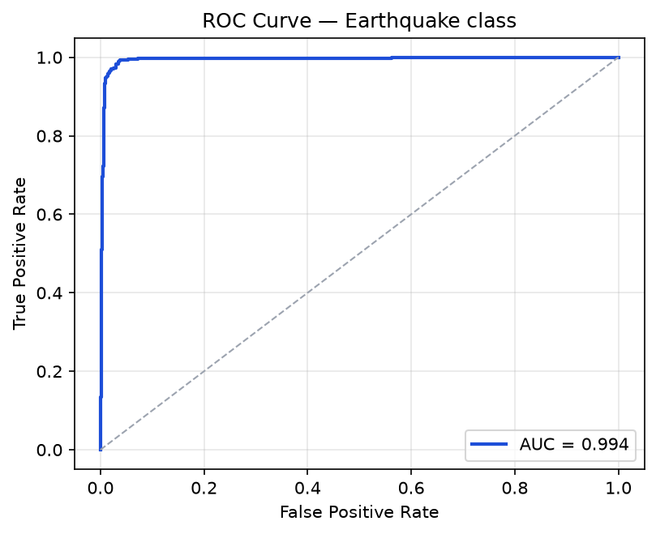
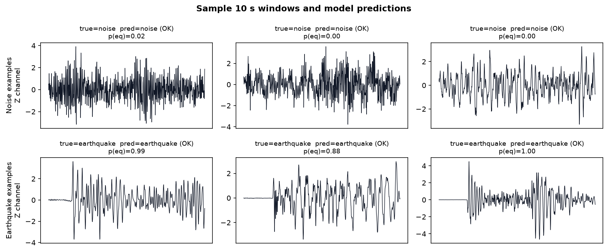
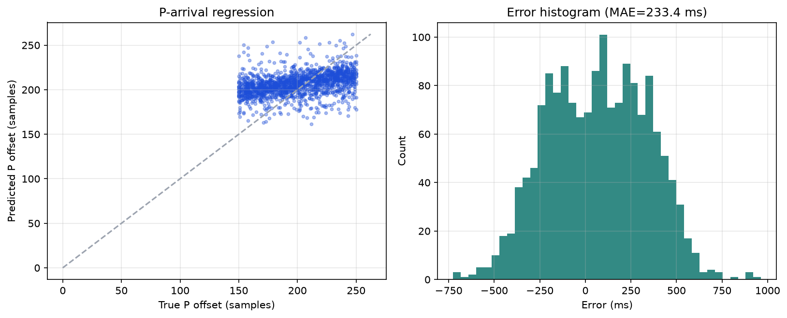
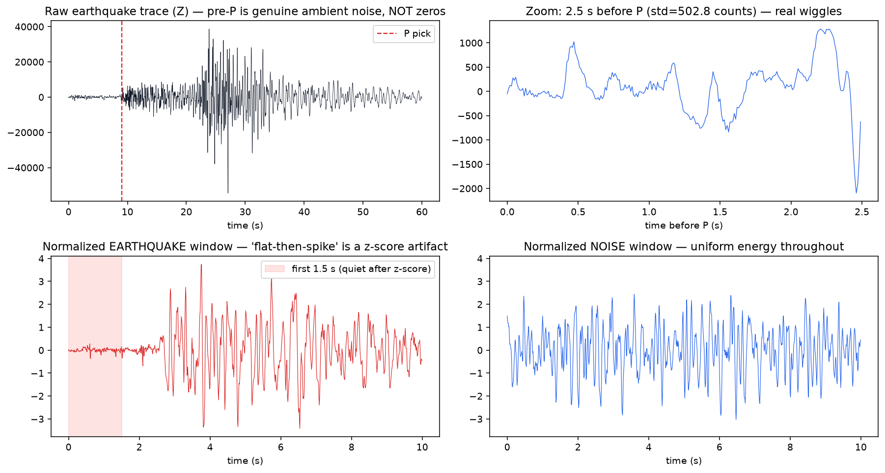
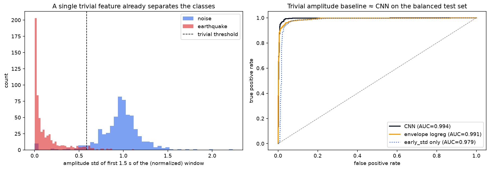
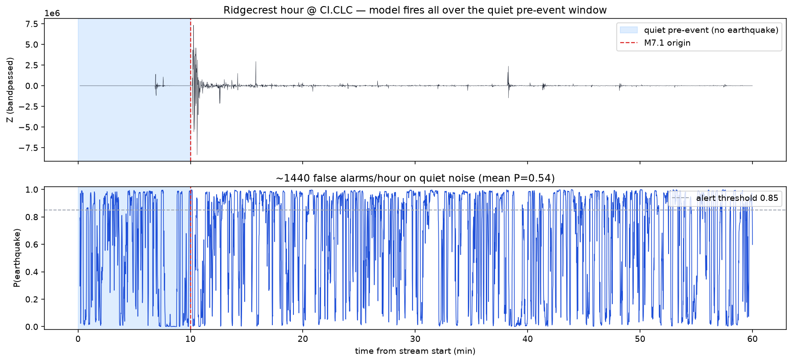
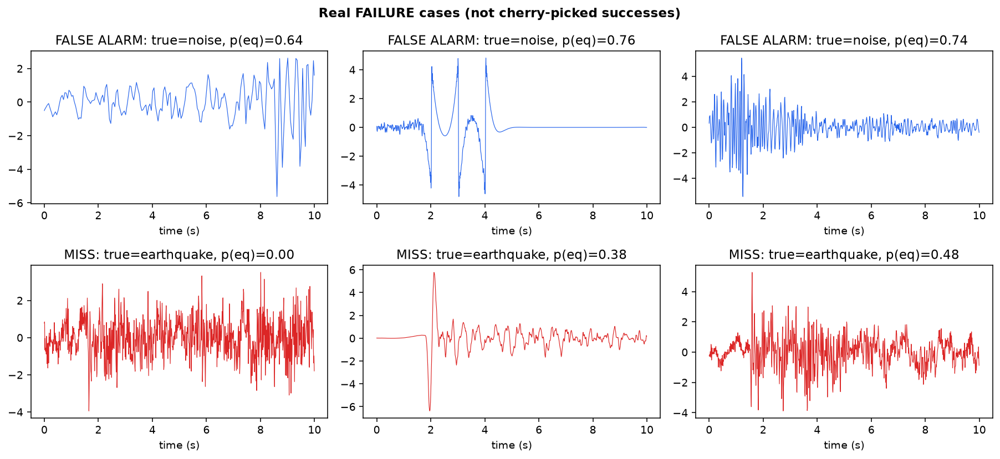

Learn P-Wave Detection, end to end.
This page teaches every meaningful detail of the project — the earthquake physics, the STEAD data, how raw seismograms become training windows, the 1D CNN architecture, how it's trained and evaluated, and — crucially — how to critique what it really learned.
1 · What is this project?
An earthquake sends out vibrations. A sensor (seismometer) records those vibrations as a wiggly line over time — a seismogram. This project asks a small neural network one deceptively simple question, sixty times a minute:
It treats a seismogram like a short piece of audio: a fixed 10-second clip, sampled 100 times per second, on three channels (East, North, Vertical). A 1D Convolutional Neural Network reads that clip and outputs two numbers — the probability it's noise and the probability it's an earthquake.
The repo also includes a second model that predicts exactly when the earthquake starts inside the window (regression), plus tools to run the detector continuously over an hour of real data and live against a streaming station.
2 · The science: why speed saves lives
An earthquake radiates two main body waves through the Earth:
P-wave (Primary)
A compressional wave (push–pull). Fast (~6 km/s) but weak. It arrives first — the gentle first tremor.
S-wave (Secondary)
A shear wave (side-to-side). Slower (~3.5 km/s) but carries most of the destructive shaking. It arrives later.
Because the harmless P-wave outruns the dangerous S-wave, detecting the P-wave the instant it arrives buys you a head start — the entire premise of Earthquake Early Warning (EEW). This is real-time detection (a smoke detector), not prediction of a future quake.
🧮 Interactive: how much warning do you get?
Move the slider to change your distance from the epicenter. Warning time is the gap between the P-wave arriving (detection) and the S-wave arriving (strong shaking), using Vp≈6 km/s and Vs≈3.5 km/s.
⏱️ Warning window ≈ seconds to act before strong shaking.
Key takeaway: warning time grows with distance — sites far from the epicenter get more warning, sites on top of it get almost none (the "blind zone").
3 · The whole pipeline at a glance
Everything in the repo is a command-line step. Data flows left to right:
Three inference "modes" reuse the trained model:
| Mode | Script | What it does |
|---|---|---|
| Single window | predict.py | Classify one cached 10 s window. |
| Continuous | continuous_inference.py | Slide the window across an hour of real data; apply an alert rule. |
| Live | live_stream.py | Poll a live FDSN station every second and alert in near-real-time. |
A parallel branch handles the second task: prepare_regression → train_regression → evaluate_regression for predicting the P-arrival time.
4 · The data: STEAD
STEAD (STanford EArthquake Dataset) is a library of ~1.2 million labeled three-component seismograms. Each trace is 60 seconds long at 100 Hz — that's 6000 samples × 3 channels — and earthquake traces come with expert phase picks: the exact sample index where the P-wave and S-wave arrive.
The project uses a smaller public subsample hosted on Zenodo so it runs on one machine. After download_stead.py --test-only you get HDF5 files structured like this:
| HDF5 key | Shape | Meaning |
|---|---|---|
traces | (N, 6000, 3) | the waveforms — samples × E/N/Z |
metadata | (N,) | names like AMT.HP_20120416124803_EV = station.network_eventtime |
p_arrival | (N,) | P-wave sample index (earthquake files only) |
s_arrival | (N,) | S-wave sample index |
Earthquake waveforms live in test.hdf5; pure background noise lives in test_noise.hdf5. That separation matters later.
▸ Deep dive: units, sampling & the name string
Amplitudes are raw instrument counts (proportional to ground motion). 100 Hz means one sample every 10 milliseconds, so sample index × 10 ms = time. The name STATION.NETWORK_YYYYMMDDhhmmss_EV encodes which sensor recorded the event and when the event happened — we'll use those tokens to detect data leakage in section 11.
5 · From a 60 s trace to a training window
The model wants fixed 10-second (1000-sample) clips, not 60-second traces. src/windows.py cuts them with deliberate rules:
Earthquake window
- Start 200 samples (~2 s) before the P pick, so the clip contains a bit of pre-event context and the first P tremor.
- Add a small random jitter of ±50 samples so the network can't memorize a fixed P position.
- Clamp to stay inside the trace, then cut exactly 1000 samples.
- Record
p_offset = p_arrival − start— this is the target for the regression model.
Noise window
A random 1000-sample slice from a dedicated noise trace.
Pre-P hard negative (on by default)
A noise-labeled window taken from before the P arrival on an earthquake trace — an attempt to teach the model that the quiet lead-in is still "noise".
Normalization
Every window is per-channel z-scored: subtract the mean, divide by the standard deviation, independently for each channel. This removes the absolute amplitude so a big quake and a small one look comparable.
▸ Deep dive: how the dataset is split
prepare_windows.py builds one earthquake window (+ optionally one pre-P noise window) per earthquake trace and one noise window per noise trace, shuffles with seed 42, then uses scikit-learn's train_test_split: 80% train / 20% test, then 15% of train becomes validation, stratified so class balance is preserved. The split is at the window level — a subtlety that causes leakage (section 11).
6 · The model: SeismicCNN1D
A 1D CNN slides small learnable filters along the time axis, detecting local shapes (a sharp onset, an oscillation) and combining them into higher-level features — just like a 2D CNN does for images, but in one dimension (time) across three channels.
Here is the exact data flow. B is the batch size; the tensor shape is (channels × timesteps):
| Layer | Output shape | Why |
|---|---|---|
| Input | (B, 3, 1000) | E/N/Z over 10 s |
| Conv1d(3→32, k=7) + BN + ReLU + MaxPool(2) | (B, 32, 500) | wide filters catch broad onset shapes |
| Conv1d(32→64, k=5) + BN + ReLU + MaxPool(2) | (B, 64, 250) | mid-scale patterns |
| Conv1d(64→128, k=5) + BN + ReLU + MaxPool(2) | (B, 128, 125) | finer, richer features |
| Conv1d(128→128, k=3) + BN + ReLU + AdaptiveAvgPool(1) | (B, 128, 1) | summarize the whole clip |
| Flatten → Dropout(0.3) → Linear(128→64) → ReLU → Dropout → Linear(64→2) | (B, 2) | decide: [noise, earthquake] |
Total: 110,466 trainable parameters — tiny by deep-learning standards, which is appropriate for a fast real-time detector.
Building blocks, in plain English
- Conv1d — learnable pattern detectors sliding over time.
- BatchNorm — keeps activations well-scaled; speeds & stabilizes training.
- ReLU — non-linearity (keep positives, zero negatives) so the net can learn complex shapes.
- MaxPool(2) — halve the time length, keep the strongest response.
- AdaptiveAvgPool(1) — average over time → one vector per clip.
- Dropout(0.3) — randomly mute 30% of units in training to reduce over-fitting.
The regressor twin
SeismicCNN1DRegressor reuses the identical convolutional backbone (it can even copy the classifier's trained weights) and swaps the head for a single sigmoid unit scaled to [0, 999]. Output = the P-wave's sample index inside the window → milliseconds via × 10.
7 · Training
Training nudges the 110k parameters so predictions match the labels. The recipe:
| Ingredient | Choice | Role |
|---|---|---|
| Loss | Cross-Entropy (class) / SmoothL1 (regression) | measures how wrong predictions are |
| Optimizer | AdamW, lr = 1e-3, weight-decay = 1e-4 | updates weights; decay curbs over-fitting |
| Scheduler | ReduceLROnPlateau (×0.5, patience 2) | lowers lr when validation stalls |
| Epochs / batch | 12 / 64 (default) | passes over data / samples per step |
| Checkpoint | best validation loss | keep the model that generalizes best |
| Seed | 42 | reproducibility |
python scripts/train.py --epochs 12 --batch-size 64
# → models/seismic_cnn1d_best.pt (+ _last.pt) and artifacts/train_results.json8 · Evaluation — and how to read it
On the balanced test set the demo model scores:

▸ Deep dive: what these metrics actually mean
| Precision | Of the windows flagged "earthquake", how many really were? (punishes false alarms) |
| Recall | Of the real earthquakes, how many did we catch? (punishes misses) |
| F1 | Harmonic mean of precision & recall — one balanced number. |
| ROC-AUC | Probability the model ranks a random earthquake above a random noise window. 0.5 = coin flip, 1.0 = perfect. |


9 · Predicting when: P-arrival regression
Detecting "an earthquake is here" is step one. Step two is pinpointing exactly when the P-wave arrives inside the window — useful for estimating warning time and magnitude. The regressor outputs a sample index; error is measured in milliseconds.

10 · Continuous & live inference
A real sensor never stops. continuous_inference.py slides the 10 s window across a long recording (one hop per second), scoring every position. To avoid firing on every blip, it uses an alert rule:
P(earthquake) ≥ threshold (default 0.85) for N consecutive hops (default 3). This is the false-alarm control real EEW engineers use.Before scoring, continuous data is preprocessed (src/sliding_window.py): detrend → 5% Hann taper → zero-phase 1–20 Hz bandpass → map to E/N/Z → resample to 100 Hz → z-score each window. The live loop (live_stream.py) does the same on the last ~10 s polled from an FDSN station every second (or replays a local file offline).
python scripts/download_continuous.py # 1 h Ridgecrest M7.1 @ CI.CLC
python scripts/continuous_inference.py --threshold 0.85 --consecutive 3How well does it hold up on real continuous data? That's the perfect segue to the audit. 👇
11 · The honest audit — what did it really learn?
This is the most important section. A skeptic looked at the "quiet-then-spike" shape of every earthquake example and asked: is the model learning P-wave physics, or a cheap shortcut? Here is how you investigate that — the whole audit is reproducible with python scripts/diagnose_shortcut.py.
Myth 1 — "the flat part is zero-padding"
First hypothesis: maybe the quiet lead-in is fake (literal zeros from trimming). Tested and rejected. Across 800 earthquake traces, 0.0% have an all-zero pre-P segment and only ~0.1% of pre-P samples are exactly zero. The pre-P median amplitude (std ≈ 42 counts) is comparable to real noise traces (≈ 50). It's genuine ambient noise.
The real problem — a normalization artifact
The earthquake coda is ~27× larger than the pre-P noise. Per-window z-scoring divides everything by that large std, so the genuine pre-P noise is squashed to look flat, while pure-noise windows stay uniformly "loud". After normalization:
| Region (normalized) | Noise windows | Earthquake windows |
|---|---|---|
| std of first 1.5 s | 0.99 | 0.23 |
| std of last 6.5 s | 0.99 | 1.11 |

Proof: a trivial detector nearly matches the CNN
If it's really keying on the envelope, a dumb feature should rival the CNN. It does:
| Model | Accuracy | ROC-AUC |
|---|---|---|
| Threshold on "std of first 1.5 s" | 95.4% | 0.979 |
| Logistic regression on 5 envelope features | 95.3% | 0.991 |
| SeismicCNN1D | 97.4% | 0.994 |

The reckoning: real continuous noise
On the ~10 minutes of quiet noise before the Ridgecrest M7.1 even happens, the model calls it "earthquake" more than half the time:

Failure cases confirm the mechanism

Bonus bug: data leakage
Because the split is at the window level with no grouping, 24.9% of test windows share the same seismic event as a training window and 94.1% share the same station — the test score is inflated by memorization.
Full write-up: docs/shortcut_and_leakage_analysis.md.
12 · CLI cheat sheet
# Setup
python -m venv .venv && source .venv/bin/activate
pip install -r requirements.txt
# Classification pipeline
python scripts/download_stead.py --test-only
python scripts/prepare_windows.py --prefer-split test
python scripts/train.py --epochs 12 --batch-size 64
python scripts/evaluate.py
python scripts/predict.py --index 0
# Regression
python scripts/prepare_regression.py --prefer-split test
python scripts/train_regression.py --epochs 15
python scripts/evaluate_regression.py
# Continuous & live
python scripts/download_continuous.py
python scripts/continuous_inference.py --threshold 0.85 --consecutive 3
python scripts/live_stream.py --demo-replay data/continuous/ridgecrest_m71_2019.mseed
# Reproduce the audit
python scripts/diagnose_shortcut.pyEvery script supports -h/--help. Full flag tables are in the project README.
13 · Glossary
A recording of ground motion over time.
Fast-weak first wave / slow-strong destructive wave.
The labeled sample index where a wave arrives.
East, North, Vertical components of motion.
A fixed-length slice (here 10 s / 1000 samples) fed to the model.
(x − mean) / std — removes absolute scale.
Convolution over the time axis to detect temporal patterns.
Ranking-quality metrics; PR-AUC is better for rare-positive streams.
Standard web API for requesting seismic waveform data.
Classic short-vs-long-term-average trigger; the baseline to beat.
Test info sneaking into training, inflating scores.
Earthquake Early Warning — detect P, warn before S.
14 · Test yourself
Click an answer to check it. Explanations appear after you choose.